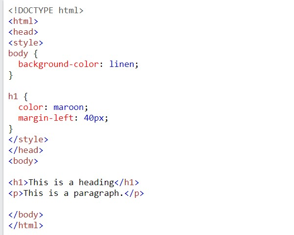
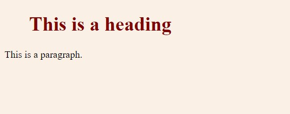

Internal CSS
An internal style sheet may be used if one single HTML page has a unique style.
The internal style is defined inside the (style) element, inside the head section.
Example:

Output

If you want to read or learn more click on read more
read More